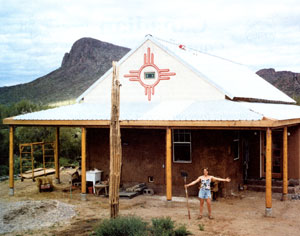
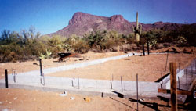
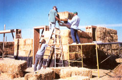
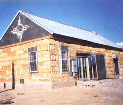
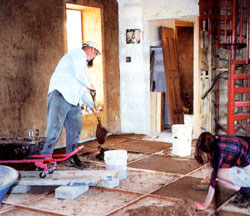
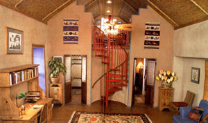
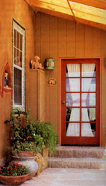

I've always enjoyed making things more than buying them. I sewed many of my own clothes as a teenager, constructed wind chimes out of seashells and even attempted to make the Eiffel Tower out of toothpicks once, before the invention of fastdrying glue.
In the early 1990s, I saw a TV show about a family without exceptional building skills who were building their own house with low-cost, natural materials that harmonized with our planet's ecosystem. My do-it-yourself genes jumped for joy. I became obsessed with the idea of building a house made of straw bales, an abundant byproduct of grain production, and finished with earthen plasters made from clay, sand and chopped straw. It couldn't he all that hard to stack up some bales and cover them with mud, I figured. This would be the ultimate craft project, save money and give me a beautiful home at the same time.
The cost of raising a family skyrocketed in Hawaii in the '80s and I simply couldn't afford to live there. My two boys and I eventually found ourselves in Long Island, New York, where my husband and I managed a photography franchise at a shopping mall. My days were filled with chaos, strain and more bills. Homes were less expensive than in Hawaii, but the cost to heat and cool them made up the difference. I also could see the haze in the air from the excessive burning of fossil fuels to heat and cool these increasingly large houses.
After we moved from New York to Tucson, my dreams refused to have anything to do with the burgeoning subdivision homes that surrounded me. I wanted to live simply, yet with beauty and dignity; thoughts nobler than the constant nagging of how I was going to pay my bills filled my mind.
I kept studying everything I could find about natural building. It all made sense: By placing large windows on the south side of a house, we could use the low winter sun for heating and lighten our dependence on gas or electricity. By building walls with straw bales, we would have an R-50 insulation from the summer heat-more insulation than most homes even have in their ceilings. Of course, we would have to insulate the ceiling, too.
An earthen floor and earthen plasters would provide thermal mass for the interior of the house. Just as rocks absorb the heat of the sun and then continue to emit that warmth after the sun sets, the earthen plasters would heat or cool with the interior of the house and then emit and help maintain that temperature.
I thought we could build one of these houses slowly, over the years, somewhere out in the country, beyond the realm of building inspections-someday. However, my husband didn't really share my dream. We ultimately went our separate ways: I found myself suddenly divorced and without enough monthly income to pay all our bills plus a mortgage; the time was upon me to turn my dream into reality.
The fact that I had no building experience, only $25,000 in savings and very little free time didn't bother me-at first. After all, I had a stack of how-to books on my coffee table and I would have the help of my two sons, Andrzej (pronounced "Andre") and J J. They were 15 and 17 when we began the construction of our straw bale home in the Sonoran desert near Tucson.
I was pretty sure I had an extreme challenge ahead of me, but I didn't realize I'd be leaving my former life behind. In building this house I found new muscles, new ways of thinking and, especially, new friends. What I really wanted from my house was a joyful, meaningful life-and I found one.
Straw-bale building experts Bill and Athena Steen, and an architect, Wayne Bingham, gave me a sketch and floor plan. They had been working on small, efficient house designs that consume fewer resources and cost less to build.
The interior of my house is about 1,000 square feet of enclosed living space. The boys share the loft, and my bedroom and the bathroom are below. The west side of the house has a U-shaped kitchen and dining area. The enclosed porch is a passivesolar sunroom on the south side of the house that I can open up to the house when I want the warmth, or close off in the summer.
Through this house design, I teamed simplicity. In preparation for moving into a smaller house, the boys and I gave away our extra possessions, keeping only what we really used, from the pots and pans in the kitchen to the clothes in our closets. We haven't missed a single thing we gave away.
Although it was smaller than my original dream, the smaller house is easier to clean, less expensive to heat and cool, and it enabled me to complete the project. A larger house would have cost too much and been too much work.
The foundation was a dusty, difficult process with days of labor laying out the footings, then building forms for the concrete. I also had to dig deep trenches and lay plumbing from the house to the septic tank. It was a time when reality came crashing into my dream, and fear and fatigue threatened to destroy the project. I might have given up, if that had been an option. I learned to toss out self-pity and my jealousy of people who were spending their weekends by the pool. I stayed focused on being grateful that I had a passion and was being given the opportunity to turn my dream into reality. I also learned to divide the huge project into small steps and not to let myself become overwhelmed by the work that lay ahead of me.
After days of toiling with dirt and concrete. a lovely moment arrived when golden hales of straw were piled by the foundation and 20 people showed up to help raise my walls. I'd found these volunteers through friends, from notices I'd put in health-food stores and an announcement I'd sent out on the straw-bale listserv. With an experienced straw-hale builder, Matts Myhrman, as our leader, we divided into teams to handle cacti wall and corner of the house. Some people tied custom hales to fit against the window and door bucks, while others raked the loose straw into hags for later use in our earthen plasters. I was the host, answering questions, providing food and making sure everyone had the supplies they needed.
On this day, I discovered the cheep joy of building by community. Many of the volunteers were complete strangers who have now become friends, and they all worked hard to make sure my walls were straight and strong. Now, I eagerly attend every wall raising I can. Work and play don't have to be separate experiences.
After enduring a post-wall-raising depression, I faced the challenge of putting a very steep roof over the hale walls. The scary part began as we had to fasten large sheets of oriented-strand board (OSB) and metal roofing on top of the trusses. To get through this phase, I had to overcome my fear of heights. I could feel the freedom of working high in the blue sky, with the birds and the tops of the saguaro cactus at eye level.
As we moved into a construction trailer on the land, the boys caught my enthusiasm and volunteered more often. I also found a consultant to help me with the difficult jobs, answer questions and tell me how to survive all the building inspections. I finally had the help and support I needed.
Once the roof was on, the basic structure of the house was completed, but there were many, many hours of carpentry to go as I filled in the gable ends and installed windows and doors. This took patience and more learning, along with hard work while I was balanced on ladders and scaffolds. But this was the spiritual part of the construction for me, as I began to relax with the work and enjoy my craft in the open desert on the long summer evenings. I almost regretted enclosing the house and shutting off the soothing, Melodic .sounds of nature.
One year after the wall-raising party, I was ready to have another gathering to coat the bales with plasters made from clay and chopped straw. Sixteen people showed up on a cold, wet day and worked in teams, chopping straw, mixing mud and covering the entire house in one day. Again, I was so touched by the hard work that people, many of them strangers, put into my house. This house was built by a community of people who love natural building.
Installing the earthen floor was like running uphill at the end of a marathon. It truly was only with the help of a steady stream of volunteers that I made it through this difficult work.
When my house passed its final inspection, I felt as though I had graduated from college and put on a Broadway production at the same time. I was tired, but I was a stronger, more joyful person with a great faith that life is ours for the creating, as long as we don't give up on our dreams. I still enjoy making things more than buying them - even houses.
We've been in the house almost two years now. The fun really began after we moved in as I covered the earthen plasters with pottery clays and the drywall with burlap soaked in clay and water. We love the solid, slightly uneven walls with their natural textures, and I especially enjoy my low mortgage and utility bills. We truly have a home, sweet home.
|
 |
 |
 |
|
 |
 |
 |
|
 |
|
|